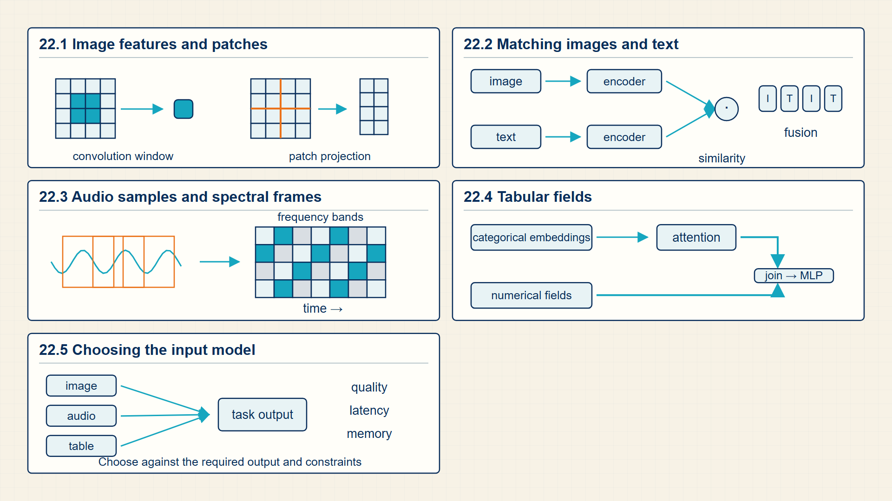
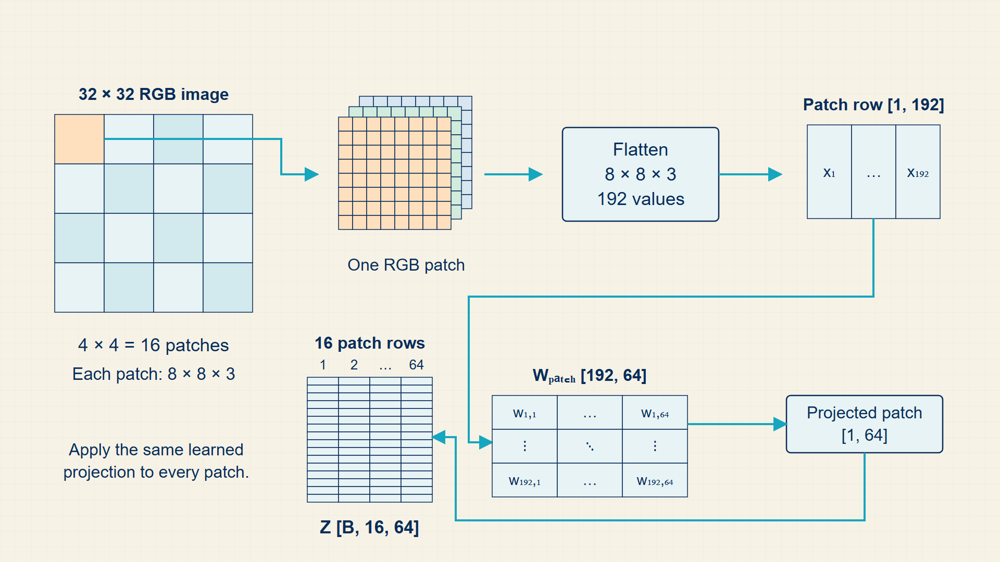
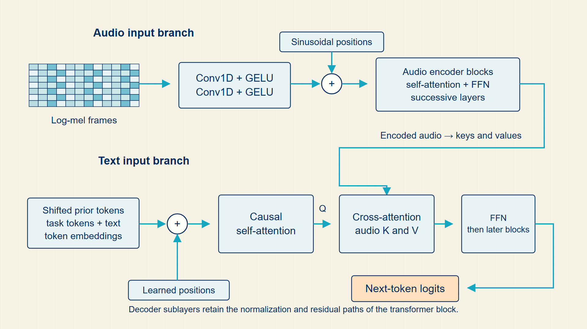
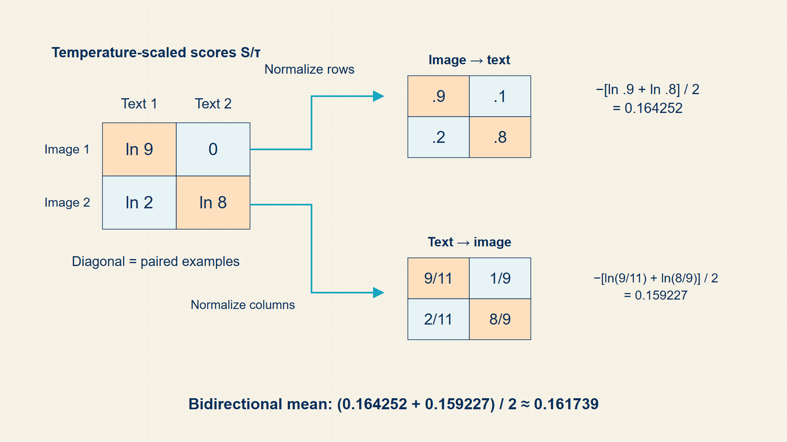

22 Multimodal Transformers: Processing Images and Audio
Transformer-style models can process more than text once images, audio, or table fields are converted into suitable input representations. The input structure and baseline model remain important when choosing an architecture.
Images, audio, and tables need modality-specific inputs before transformer-style processing can begin. Patches, spectrograms, contrastive pairs, and strong baselines show what changes when the data is not ordinary text.
In code, PyTorch image, audio, and tabular tensors feed modality-specific front ends; Hugging Face processors package images, audio, and text for pretrained multimodal models.

22.1 Tokenizing Images into Patches with Vision Transformers (ViT)
Vision models first turn pixels into local features or patch vectors before a classifier or transformer can combine them.
- Convolution: A local sliding filter with shared weights.
- Patch token: A vector representation of a fixed-size image patch.
- Vision transformer: A transformer that processes patch embeddings plus positional information.
A convolution keeps the image as a spatial grid and applies the same learned filter at many locations. A vision transformer first divides the image into patches, flattens each patch, and projects each patch into the same kind of vector sequence used by text transformers.
The causal link to earlier chapters is sequence length. Smaller patches create more tokens, and more tokens make attention more expensive. The image preprocessing choice therefore changes both the mathematical input object and the compute cost of later transformer layers.
A convolutional layer slides a learned kernel across local image neighborhoods. Stride controls how far the kernel moves, padding controls border treatment, and the output-size equation determines the spatial dimensions passed to the next layer.
A residual network (ResNet) adds an identity path around one or more convolutional transformations. The residual sum gives gradients a shorter route through deep networks and lets a block learn a correction to its input rather than a completely new representation.
A vision transformer divides the image into fixed-size patches, flattens each patch, and projects it to the model width. The resulting patch sequence has the same mathematical role as a token sequence, although its positions refer to image regions rather than text tokens.
A convolutional neural network keeps an image as a spatial grid. A convolutional kernel reads local pixel neighborhoods, reusing the same weights across the image. Stacked layers then build from edges and textures up to complex visual patterns. A ResNet adds a shortcut around convolutional transformations so a deep block learns a correction to its input.
A vision transformer works differently. It divides an image into patches, projects each patch to a vector, adds position encodings, and applies standard transformer attention across all patches. CNNs therefore build in locality and translation reuse; vision transformers trade that prior for global patch interactions. Both ultimately produce features for classification, image-text matching, or generation.
A convolutional layer is a local weighted sum. One output location is formed by placing a small kernel over one image neighborhood, multiplying matching pixel and kernel entries, and adding the products. Moving the kernel to the next location reuses the same learned weights.
A vision-transformer patch token is a different object: it is a flattened image region followed by a learned linear projection. The patch token plays the same role as a text token vector, but its position refers to an image region rather than a word or subword.
Vision Transformers divide 2D images into non-overlapping patches (e.g., 16x16 pixels), flatten each patch into a vector, and linearly project them into standard transformer embedding dimensions.
By treating image patches as visual tokens, the same multi-head attention architecture processes vision, text, and multimodal tokens seamlessly.
A convolution computes a weighted local sum over spatial offsets and input channels. The expression below describes a two-dimensional convolution with unit stride; padding determines which input coordinates exist near the border.
Convolution:
\[ Y_{i,j,c_{\mathrm{out}}}=b_{c_{\mathrm{out}}}+\sum_{u,v,c_{\mathrm{in}}}W_{u,v,c_{\mathrm{in}},c_{\mathrm{out}}}X_{i+u,j+v,c_{\mathrm{in}}} \tag{22.1}\]
Here, \(X\) is the input feature map, \(W\) is the convolution kernel, \(b\) is the output-channel bias, and \(Y\) is the output feature map. The indices \(i,j\) locate the output, \(u,v\) locate a kernel entry, and \(c_{\mathrm{in}},c_{\mathrm{out}}\) identify input and output channels.
A convolution output is a local weighted sum: move the kernel over spatial positions and reuse the same weights at each position.
Convolution encodes locality before any transformer-style global mixing.
Output size depends on padding p, kernel size k, and stride s.
Convolution output size:
\[ n_{\mathrm{out}}=\left\lfloor\frac{n_{\mathrm{in}}+2p-k}{s}\right\rfloor+1 \tag{22.2}\]
Here, \(n_{\mathrm{in}}\) is one input width or height, \(p\) is padding on each side, \(k\) is kernel size, and \(s\) is stride. This form assumes dilation one.
The kernel can start at every stride-spaced position whose final covered index remains inside the padded input. Counting those legal starts gives the floor expression.
patch and convolution choices directly set sequence length for vision models.
An H by W image with P by P patches becomes a sequence of patch tokens.
ViT patch count:
\[ N_{\mathrm{patches}}=\left(\frac{H}{P}\right)\left(\frac{W}{P}\right) \tag{22.3}\]
Here, \(H\) and \(W\) are image height and width, and \(P\) is the patch side length. The expression assumes that \(P\) divides both image dimensions; otherwise the image must be padded or cropped.
Patchification divides the image height and width by the patch side length, then multiplies those two counts to get sequence length.
Patch size directly controls transformer sequence length for images.
Example: Patch sequence length for a 224-pixel image
Divide a 224 by 224 image into non-overlapping 16 by 16 patches.
Patches per side:
\(\frac{224}{16} = 14\)
Sequence positions:
\(14 \cdot 14 = 196\)
Adding one class token would produce 197 transformer positions.
Dimensions:
image: B x 3 x 224 x 224
patch sequence: B x 196 x D
Halving patch width to 8 would quadruple sequence length and substantially increase attention cost.
Example: Comparing one convolution output with one image patch token
Use a two-by-two image patch with values [[1,2],[3,4]].
Convolution:
With a two-by-two kernel of ones, the local output is \(1+2+3+4 = 10\).
The same kernel can be reused at another image location.
Vision-transformer patch:
Flatten the patch to (1,2,3,4).
A learned projection maps those four pixel values to one D-dimensional patch vector.
Convolution keeps local grid structure through a sliding kernel; a vision transformer converts regions into a sequence of vector tokens.
The code takes a batch of two RGB images and uses a strided convolution as the learned patch projection. It prints the spatial patch grid and the equivalent sequence, so an incorrect patch count or axis order is immediately visible.
Code example: Patchifying an image with a strided convolution
import torch
import torch.nn as nn
images = torch.randn(2, 3, 224, 224)
patch_projection = nn.Conv2d(in_channels=3, out_channels=64, kernel_size=16, stride=16)
patch_grid = patch_projection(images) # [2, 64, 14, 14]
patch_sequence = patch_grid.flatten(2).transpose(1, 2) # [2, 196, 64]
print(patch_grid.shape)
print(patch_sequence.shape)A 224 by 224 image with 16 by 16 patches produces 196 patch vectors.
This example omits class tokens, positional embeddings, and subsequent transformer blocks.
Patch tokens let a transformer process images. Contrastive learning connects those image representations with text representations.
22.2 Aligning Visual and Text Embeddings with CLIP Contrastive Loss
Multimodal models either align representations from different encoders or condition a generator on projected visual representations.
Contrastive Language-Image Pre-training (CLIP) aligns paired image and text examples in a shared embedding space.
CLIP encodes images and text separately, compares every image with every caption in the batch, and uses a contrastive loss to raise matched similarities in both directions. The similarity matrix is therefore both a computational object and the set of candidate negatives for the batch.
A vector-quantized variational autoencoder (VQ-VAE) converts image regions into discrete codebook entries that can be modeled as tokens. The Vision-and-Language Transformer (ViLT) removes a separate heavy visual encoder and applies transformer computation more directly to projected image patches and text tokens.
For image captioning or visual question answering, a vision encoder produces image features and a language decoder generates text conditioned on those features. The course homework evaluates both successful outputs and systematic failures such as counting or attribute errors.
A batch similarity matrix S trains matching image-text pairs to align.
CLIP contrastive loss:
\[ L_{\mathrm{CLIP}}=\frac{1}{2}\left[\operatorname{CE}\!\left(\frac{S}{\tau},y\right)+\operatorname{CE}\!\left(\frac{S^{T}}{\tau},y\right)\right] \tag{22.4}\]
Here, \(S\in\mathbb{R}^{B\times B}\) is the image-text similarity matrix for a batch of \(B\) pairs, \(\tau>0\) is a learned or fixed temperature, and \(y=(1,\ldots,B)\) identifies the matching diagonal entries. Each cross-entropy function receives logits, not probabilities, and the factor one half averages the image-to-text and text-to-image directions.
Each image row is normalized into probabilities over captions, and each text column is normalized into probabilities over images. Cross-entropy rewards the paired entry in both directions.
CLIP learns a shared embedding space in which matched image-text pairs score higher than mismatched pairs in the same batch.
Example: CLIP contrastive loss
Suppose two image rows assign probabilities 0.9 and 0.8 to their matching captions. The image-to-text loss is \((-\log 0.9-\log 0.8)/2=0.164\) nats. The full CLIP loss also computes the text-to-image direction and averages the two directional losses.
CLIP compares whole-image and whole-text representations. Speech recognition instead turns a time sequence into a token sequence.
22.3 Converting Continuous Speech Spectrograms to Text with Whisper
Speech models convert a one-dimensional waveform into a time-frequency representation before sequence modeling begins.
- Waveform: A sequence of sampled audio amplitudes indexed by time.
- Short-time Fourier transform: A Fourier transform applied to overlapping local windows of a waveform.
- Mel spectrogram: A time-frequency magnitude representation whose frequency axis is remapped to mel bands.
- Whisper: An encoder-decoder speech model that maps audio features to text tokens.
Windowing preserves when frequency content occurs. Each frame contributes one spectrum; stacking frame spectra creates a matrix whose rows or columns represent time and frequency. Mel filtering then groups frequencies according to a perceptual scale.
Whisper treats the feature sequence as encoder input and generates transcript tokens with a decoder. The mathematical path is therefore waveform to feature matrix to encoded sequence to autoregressive text, rather than raw audio values directly to words.
The lecture notes that performance varies by language and available training data. A strong result on a high-resource language does not establish the same quality for every language represented in the benchmark.
A waveform is a sequence of amplitude samples. The short-time Fourier transform divides it into overlapping windows and computes the frequency content of each window. Stacking the window spectra creates a time-frequency matrix that a speech encoder can process as a sequence.
The window is essential because one Fourier transform over a whole recording would show which frequencies occur but not when they occur. The mel filterbank then groups frequency bins into bands, producing a smaller representation that is commonly used by speech models.
A local window selects part of the waveform before its frequency components are measured.
Short-time Fourier transform:
\[ X[m,k]=\sum_{n=0}^{N-1}x[n]w[n-mH]\exp\!\left(-\frac{2\pi i kn}{N}\right) \tag{22.5}\]
Here, \(x[n]\) is audio sample \(n\), \(w[n-mH]\) selects the window for frame \(m\), \(H\) is the hop size in samples, \(k\) is a discrete frequency bin, and \(N\) is the transform length. The complex value \(X[m,k]\) records magnitude and phase for one time-frequency position.
Repeating the calculation at shifted windows creates a time-frequency matrix.
Example: Turning a short waveform window into one spectral frame
Take four consecutive waveform samples as one short analysis window.
Window:
\(x = (1,0,-1,0)\)
The four samples preserve a short segment of time.
Frequency calculation:
For the zero-frequency component, add the samples: \(1+0+(-1)+0 = 0\).
Other Fourier components use the same samples with complex frequency weights.
Sequence representation:
Repeat the calculation for overlapping windows.
The resulting spectral frames form a time-by-frequency matrix before mel filtering and speech encoding.
Speech models receive these time-indexed feature vectors rather than the raw waveform as their main sequence input.
Audio frames and image patches are modality-specific inputs. Tabular data requires a different baseline because its fields do not form a natural sequence.
22.4 Benchmarking Tabular Transformers against Gradient-Boosted Trees
Tabular models operate on named fields whose scales, types, and missing-value patterns differ from text-token sequences.
- TabTransformer: A model that embeds categorical fields and applies attention across field representations.
- Gradient-boosted decision trees: An ensemble of decision trees trained sequentially to correct earlier residuals.
Categorical values can be assigned embedding rows, while continuous values require normalization or a learned projection. Attention then compares fields within one record rather than words within one sentence.
The Week 8 material retains gradient-boosted trees as a strong baseline. A transformer is most useful when field interactions, pretraining, multimodal inputs, or transfer learning justify its additional complexity; it should not replace a simpler baseline by default.
Tabular inputs mix numeric, categorical, missing, and sometimes time-dependent fields. Strong baselines such as regularized linear models and gradient-boosted decision trees often remain competitive because they handle heterogeneous columns and limited data efficiently.
A tabular transformer embeds categorical fields, normalizes numeric fields, and uses attention to model interactions between columns. It is useful when complex feature interactions, pretraining, or multimodal inputs justify extra compute. For an ordinary supervised table, a regularized linear model and gradient-boosted trees provide necessary comparison points rather than an assumed ranking.
Model choice starts with the input structure and a strong baseline, then asks whether richer interactions justify the additional cost.
22.5 Choosing a Model Family for a New Input Modality
The input structure determines the first representation and the useful comparison baseline; it does not automatically require a transformer.
Images have local two-dimensional neighborhoods. A convolutional network uses shared local kernels and remains a strong baseline when translation-like local patterns matter. A vision transformer turns patches into a sequence and is useful when long-range patch relationships or transfer from large-scale pretraining matter.
Audio begins as a waveform, but speech models commonly receive a time-frequency array such as a mel spectrogram. The sequence axis represents time frames, so recurrent, convolutional, and transformer encoders can all be relevant depending on context length and deployment constraints.
Tables contain heterogeneous named fields rather than a natural spatial or token order. Gradient-boosted decision trees are often the practical baseline. Tabular transformers become compelling when categorical embeddings, field interactions, transfer learning, or multimodal connections justify their extra capacity.
Multimodal tasks need both a representation for each input type and a way to connect them. CLIP aligns independent image and text encoders for retrieval and matching. Captioning and visual question answering instead condition a language decoder on visual features, so the final output remains a token sequence.
The next chapter maps these representations and computations to the tensors and operations that implement them.
22.6 Multimodal trace
Beyond-text transformers reuse the same central idea: turn the input into a sequence of vectors with a consistent hidden width. Images become patch tokens, audio becomes frame or spectrogram tokens, tables become field tokens, and multimodal systems align several token streams.
Mixture-of-experts models add conditional computation. A router scores experts for each token representation, selects a small subset, and combines their outputs. The mathematical issue is no longer only representation quality; load balancing and routing stability become part of the model behavior.
Residual connections let a deep vision block learn a correction while preserving a direct path for the input and its gradient.

The identity path and transformed path must have compatible dimensions before they are added, the same constraint later used by transformer residual connections.
A vision transformer turns an image grid into a sequence by flattening and projecting fixed-size patches.

Patch size fixes sequence length: smaller patches preserve more spatial detail but increase the number of attention positions.
Speech recognition uses a time-frequency feature sequence as encoder input and generates transcript tokens with a decoder.

The modality-specific step ends at the audio feature matrix; encoder-decoder sequence modeling then uses the same conditional generation ideas developed for text.
Multimodal models often align image and text encoders by training paired examples to be close and mismatched examples to be far apart.

CLIP makes the shared embedding space a training objective. The same idea later supports retrieval, captioning, and vision-language prompting.
Audio enters transformer-style models only after a signal representation step. The Week 8 PCM page names the raw sampling objects before spectrogram features appear.

This figure grounds the audio formulas: sampling rate, channels, and amplitude values are the raw objects transformed into time-frequency features.
Non-text models first convert modality-specific data into token-like vectors or routed expert computations. Images use [B,C,H,W] before patches [B,N,D]; audio frames and table fields become sequence axes. A modality-specific front end creates vectors, then transformer-style blocks or contrastive losses operate on them.
In PyTorch, Convolutions, patch projections, spectrogram transforms, and contrastive losses implement the conversions.
Performance note: The expensive step can be front-end feature extraction, quadratic attention over many patches, or MoE routing imbalance.
Example: Patch count example
A 32 by 32 RGB image split into 8 by 8 patches has \(\frac{32}{8}·\frac{32}{8}=16\) patch tokens.
Each patch contains \(8·8·3=192\) raw numbers before projection.
A projection to width \(D=64\) produces transformer input dimensions \([B,16,64]\), plus an optional class token.
Key calculations
ViT patch count:
\[ N_{\mathrm{patches}}=\left(\frac{H}{P}\right)\left(\frac{W}{P}\right) \tag{22.6}\]
Patch projection:
\[ Z=\operatorname{flatten}(\mathrm{patches})W_{\mathrm{patch}},\quad Z\in\mathbb{R}^{B\times N\times D} \tag{22.7}\]
MoE routing:
\[ g=\operatorname{softmax}(W_{\mathrm{gate}}x),\quad y=\sum_{e\in\mathcal{T}_{k}(g)}g_{e}^{(k)}f_{e}(x) \tag{22.8}\]
Here, \(x\in\mathbb{R}^{D}\) is one token representation, \(g\in\mathbb{R}^{E}\) contains router probabilities for \(E\) experts, and \(\mathcal{T}_{k}(g)\) contains the indices of its \(k\) largest entries. Each selected expert \(f_e\) returns a \(D\)-dimensional vector, and \(g_e^{(k)}\) renormalizes the selected weights so they sum to one. A separate balancing loss is normally needed because this equation alone can route too many tokens to the same expert.
Audio framing:
\[ \mathrm{frames}=\left\lfloor\frac{\mathrm{samples}-\mathrm{window}}{\mathrm{hop}}\right\rfloor+1 \tag{22.9}\]
Dimension trace
These dimensions appear in the computation in order.
- Image: [B, C, H, W].
- Flattened patches: [B, N, P·P·C].
- Patch embeddings: [B, N, D].
- Tabular field tokens: [B, F, D].
- Router scores: [B, T, E] for E experts.
PyTorch implementation notes
- Patchification changes a spatial grid into a sequence before attention begins.
- Projection layers align modality-specific features with the transformer hidden width.
- MoE routing creates conditional compute and therefore requires load-balancing checks.
Beyond-text models first turn modality-specific inputs into vectors before reusing transformer-style computation.
PyTorch maps these mathematical objects to tensors, modules, losses, and optimizers.